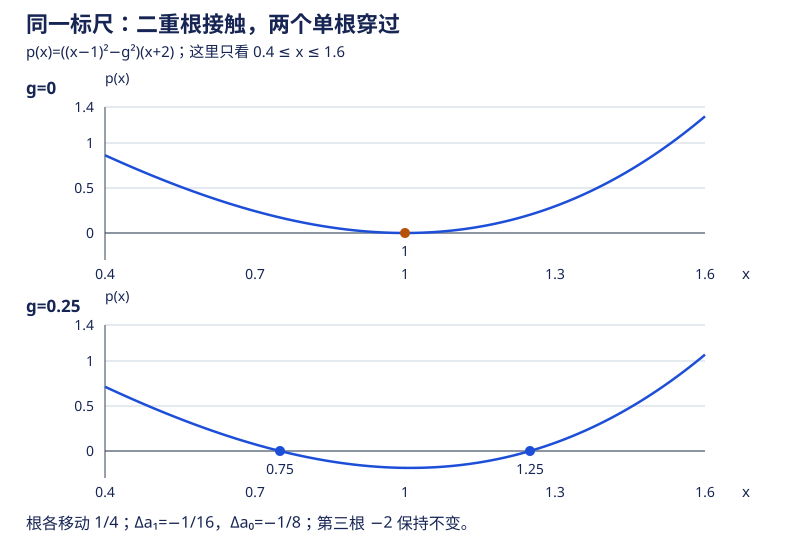

本页目录
高代 I · 多项式
高等代数的开篇为什么是多项式？两个理由：它是"带算术结构的代数系统"最好的第一个样本（整除、辗转相除、唯一分解——与整数惊人平行，抽象代数"环论"的预演）；特征多项式、最小多项式（高代 V）的一切性质都在这里预铺。
学习层：根、重数与数值敏感性是三本账
先修与去向：需要熟悉配方、因式分解与导数；导数判别可回看一元微分。多项式的整除结构会进入特征值与特征向量，抽象版本见环与域。
1. 具体情境：校准方程为什么会“碰到”而不是“穿过”零点？
把一个简化的校准误差写成
这里 \(x\) 是待调参数，\(p(x)=0\) 表示误差抵消。先限定实验范围：\(0.5\le c\le1.5\)、\(-3\le d\le-1\)、\(0\le g\le0.8\)，所以 \(d\) 与两个中心根至少相距 \(0.7\)。在这个范围内，\(g=0\) 时 \(c\) 恰好二重，\(g>0\) 时 \(c-g,c+g,d\) 是三个单根。一般参数不能直接照搬：若 \(d=c,g=0\)，就变成三重根；若 \(d=c\pm g\)，也会发生根的合并。

2. 揭示前预测：先把三种问题分开
打开实验前，先回答四个问题：
- \(g=0\) 时，中心根的重数和穿越行为是什么？
- 从 \(g=0\) 增加到正数时，中心附近会留下一个根，还是分成两个单根？
- 在这个具体多项式族里，系数 \(a_1\) 相对重根基准的变化是一次尺度还是二次尺度？
- 有限区间上的数值曲线全都正确，能否单独证明代数基本定理？
预测的对象不是“这张图长什么样”，而是根的代数身份。尤其要把“根的个数”“根的重数”和“根对系数扰动的移动量”写成不同的判断。
3. 正式桥：从因式到系数，再回到根
展开得到
因此根的和为 \(d+2c\)，根的积为 \(d(c^2-g^2)\)。这是 Vieta 关系的一个可复算样本。\(g=0\) 时，因式 \((x-c)^2\) 加上 \(c-d\ne0\) 才给出恰好二重根；导数判别是
只知道 \(p(r)=p'(r)=0\)，只能判定至少二重。更一般地，若实多项式 \(p(x)=(x-r)^m q(x)\)、\(q(r)\ne0\)，连续性保证 \(q\) 在足够小的邻域内不变号。穿越零轴与否就由 \((x-r)^m\) 决定：奇重穿过，偶重接触而不穿过。这是图像规律背后的理由，而不是从几个像素猜重数。
保持 \(c,d\) 不变，\(g>0\) 时，两个中心根各移动 \(g\)，系数向量则改变
于是本族的系数扰动为二次尺度、根移动为一次尺度；这里改变的不只是 \(a_1\)。这展示了重根附近的敏感性，尚不是指定基、范数后的通用条件数。
怎样读放大图？ 全局图画原始 \(x,p(x)\)。当 \(g>0\)，局部图改用 \(u=(x-c)/g\)、\(v=p(x)/[g^2(c-d)]\)，直接化简成
所以中心两根固定出现在 \(u=\pm1\)，无须先用浮点数算出可能已舍入成相同数字的 \(c\pm g\)。当 \(g=0\)，实验另取 \(h=1/4\)，用 \(u=(x-c)/h\)、\(v=u^2[1+hu/(c-d)]\)。两种图都明确标出缩放；它们的高度不能当作同一个物理误差直接比较。
JavaScript 失效时的静态 fallback：取 \(c=1\)、\(d=-2\)。
| 参数状态 | 根账本 | 系数或图形读法 |
|---|---|---|
| \(g=0\) | \(x=1\) 为二重根，\(x=-2\) 为单根 | 中心处接触、不穿过；\(p(1)=p'(1)=0\) |
| \(g=0.2\) | \(x=0.8,1.2,-2\) 都是单根 | \(a_1\) 相对重根基准变化 \(-0.04\)，中心根分离 \(0.4\) |
| 任意有限窗口 | 只能看到采样点和窗口内的交点 | 不能由有限图形推出代数基本定理 |
4. 定理与失败边界
- 定理桥：余数定理给出 \(p(a)=0\iff x-a\) 整除 \(p\)；因式中的指数才是重数。Vieta 只描述根的对称组合，不等于已经数值求出了每个根。
- 重数边界：图像相切是实根的可视线索，不是任意高次多项式的重数证明；正式判别要使用 \(p\) 与 \(p'\) 的最大公因式。
- 数值边界：重根分裂的 \(g\) 对应本模型的系数变化 \(g^2\)，不等于所有多项式或所有求根算法的统一条件数结论。
- 存在性边界：有限数值图只能检查有限窗口和有限采样。代数基本定理是在复数域上计重数的存在性定理，不能由一次实验图替代。
5. 迁移：换一种扰动，结论还成立吗？
- 在实验范围外令 \(d=c,g=0\)。求根的重数与 \(p''(c)\)，解释为什么它穿过零轴。
- 固定 \(c=1,d=-2\)，改研究 \(q_\varepsilon(x)=((x-1)^2+\varepsilon)(x+2)\)，其中 \(0<\lvert\varepsilon\rvert<1\)。分别求 \(\varepsilon\) 正负时中心两根，并比较根移动与系数变化。
- 证明 \(x^4+x^3+x^2+x+1\) 在 \(\mathbb Q\) 上不可约；尝试平移后使用 Eisenstein，不能把“没有有理根”当成四次式不可约的充分条件。
展开迁移题答案与复算
- \(p=(x-c)^3\)，恰好三重，\(p''(c)=0\)、\(p^{(3)}(c)=6\)。立方在两侧异号，所以即使 \(p=p'=0\) 也会穿过零轴。
- \(\varepsilon<0\) 时根为 \(1\pm\sqrt{-\varepsilon}\)；\(\varepsilon>0\) 时为 \(1\pm i\sqrt\varepsilon\)。第三根仍是 \(-2\)。展开 \(q_\varepsilon=x^3+(-3+\varepsilon)x+(2+2\varepsilon)\)，故 \(\Delta a_1=\varepsilon,\Delta a_0=2\varepsilon\)，而复平面中根移动距离为 \(\sqrt{\lvert\varepsilon\rvert}\)。例如 \(\varepsilon=\pm10^{-4}\)，根移动 \(10^{-2}\)；正扰动时实图只剩一个实根，不代表两个复根消失。
- 平移后 \(f(x+1)=x^4+5x^3+10x^2+10x+5\)，取素数 \(5\)：它不整除首项系数，整除其余系数，\(25\) 不整除常数项。平移 \(x\mapsto x+1\) 的逆为 \(x\mapsto x-1\)，保留分解与次数，所以原式也不可约。
实验的数值接口也限定在上述参数盒内，越界会报错；不会把碰撞参数悄悄截断成另一个多项式。极小正 \(g\) 的两根保留为两个代数身份，即使绝对坐标无法分辨；若 \(g^2\) 下溢，系数变化标为非零但无法数值表示。已舍入的两个系数相减则可能是零。三者必须分开读。
1. 一元多项式与整除
定义 \(f(x) = a_n x^n + \cdots + a_1 x + a_0\)（\(a_n \neq 0\) 时 \(\deg f = n\)）。系数取自数域 \(P\)（对四则封闭的数集，如 \(\mathbb{Q}, \mathbb{R}, \mathbb{C}\)）——"在哪个数域上"贯穿全页，同一多项式在不同域上可约性完全不同。
带余除法 对 \(f, g\ (g \neq 0)\)，存在唯一的 \(q, r\)：
整除 \(g \mid f \iff r = 0\)。性质：传递性；\(g \mid f_i \Rightarrow g \mid (u_1 f_1 + u_2 f_2)\)（整除组合）。整除关系不随数域扩大而改变（带余除法的商余不依赖域）。
2. 最大公因式与互素
定义 对不全为零的 \(f,g\)，\(d=(f,g)\) 满足 \(d\mid f\)、\(d\mid g\)，且每个公因式都整除 \(d\)。再要求 \(d\) 首一，才唯一。
辗转相除法（Euclid）：反复带余除法，将最后一个非零余式除以它的首项系数，即得到首一的 \((f,g)\)；回代得 Bézout 等式：
互素 \((f,g) = 1 \iff \exists u,v:\ uf + vg = 1\)。三条高频推论（证明全靠 Bézout，一行流）：
- \(f \mid gh\) 且 \((f, g) = 1 \Rightarrow f \mid h\)；
- \(f_1 \mid g,\ f_2 \mid g,\ (f_1, f_2) = 1 \Rightarrow f_1 f_2 \mid g\)；
- \((f, g) = (f, h) = 1 \Rightarrow (f, gh) = 1\)。
3. 因式分解定理
不可约多项式：次数至少为一，且在数域 \(P\) 上不能分解为两个正次数多项式之积。非零常数是单位，不叫不可约多项式。类比素数；性质：\(p\) 不可约，则 \(p \mid fg \Rightarrow p\mid f\) 或 \(p \mid g\)。
定理（唯一分解） 数域上任一次数 \(\geq 1\) 的多项式可分解为不可约多项式之积，且分解在不计次序与常数因子意义下唯一。（标准分解式 \(f = c\,p_1^{r_1}\cdots p_s^{r_s}\)。）
重因式：\(p^k \mid f\) 但 \(p^{k+1} \nmid f\) 称 \(k\) 重。判别工具：
（这里 \(f\) 非零、\(p\) 不可约，系数域是特征零的数域；\(p\) 是 \(f\) 的 \(k\) 重因式，则是 \(f'\) 的 \(k-1\) 重因式。正特征域不能无条件照搬，例如特征 \(p\) 时 \((x^p)'=0\)。）去重技巧：\(\dfrac{f}{(f, f')}\) 与 \(f\) 有完全相同的不可约因子且全为单重——不用求根就能"洗掉"重数。
4. 根与三大数域上的分解
余数定理：\(f(x) = (x - a) q(x) + f(a)\)；\(a\) 为根 \(\iff (x-a) \mid f\)。\(n\) 次非零多项式在任意扩域中至多有 \(n\) 个不同根。
Vieta 公式：在分裂域中计重数列出全部 \(n\) 个根，根与系数的关系 \(\sum x_i = -\frac{a_{n-1}}{a_n}\)，\(\prod x_i = (-1)^n\frac{a_0}{a_n}\) 等。
| 数域 | 不可约多项式形态 | 分解结论 |
|---|---|---|
| \(\mathbb{C}\) | 仅一次式 | 代数基本定理：\(n\) 次恰有 \(n\) 个复根（计重数），\(f = a_n\prod(x - z_i)\) |
| \(\mathbb{R}\) | 一次式 + 判别式负的二次式 | 复根共轭成对出现（实系数 ⇒ \(f(\bar z) = \overline{f(z)}\)），配对成二次因子 |
| \(\mathbb{Q}\) | 可有任意高次不可约 | 见下两条工具 |
代数基本定理不是任意域的公理结论。常见证明用复分析的 Liouville 定理；也有结合实数性质与代数工具的证明。这里先使用它的结论，后续复分析再解释证明，不能由有限图像代替。
有理根定理：整系数 \(f\) 的有理根 \(\frac{p}{q}\)（既约）必满足 \(p \mid a_0,\ q \mid a_n\)。若 \(a_0 e0\)，取 \(q>0\) 后候选有限，可逐一验证；若 \(a_0=0\)，先提出所有 \(x\) 因子，记录零根，再处理剩余多项式。
Eisenstein 判别法：整系数 \(f\)，若存在素数 \(p\)：\(p \nmid a_n\)、\(p \mid a_i\ (i < n)\)、\(p^2 \nmid a_0\)，则 \(f\) 在 \(\mathbb{Q}\) 上不可约。（例：\(x^n - 2\) 对任意整数 \(n\ge1\) 不可约 ⇒ \(\mathbb{Q}\) 上存在任意高次不可约多项式。）配合平移代换 \(x \to x + 1\) 扩大适用面（分圆多项式 \(x^{p-1} + \cdots + 1\) 的标准处理）。
5. 对称多项式一瞥
基本对称多项式 \(\sigma_1 = \sum x_i,\ \sigma_2 = \sum_{i<j} x_i x_j,\ \dots,\ \sigma_n = \prod x_i\)。
定理 任一对称多项式可唯一表示为 \(\sigma_1, \dots, \sigma_n\) 的多项式。（用途：不解根而计算根的对称函数——配合 Vieta，如求 \(\sum x_i^2 = \sigma_1^2 - 2\sigma_2\)；Newton 恒等式给幂和的递推。）
6. 典型例题
例 1（Bézout 应用） 证明 \((f, g) = 1 \Rightarrow (f g, f + g) = 1\)。 解：设不可约 \(p \mid fg\) 且 \(p \mid f+g\)。由 \(p \mid fg\) 知 \(p \mid f\) 或 \(p \mid g\)；不妨 \(p \mid f\)，结合 \(p \mid f + g\) 得 \(p \mid g\)，与 \((f,g)=1\) 矛盾。
例 2（重根判别） \(f = x^4 - 2x^3 + 2x - 1\) 求重因式。 解：\(f'=4x^3-6x^2+2\)。两步带余除法为
将最后非零余式首一化，得到 \((f,f')=(x-1)^2\)。所以 \(x-1\) 在 \(f\) 中的重数是三；继续除得 \(f=(x-1)^3(x+1)\)。最大公因式只留下重复部分，没有出现的因式可能仍是单重因式，不能凭它单独列出全部根。
例 3（Eisenstein + 平移） 证明 \(f=x^4+x^3+x^2+x+1\) 在 \(\mathbb Q\) 上不可约。 解：原式常数项为一，直接 Eisenstein 不适用。平移得 \(f(x+1)=x^4+5x^3+10x^2+10x+5\)，用素数五成立；平移是可逆的代入，故保持不可约性。具体整除检查见上方迁移题答案。
7. 原始资料与继续阅读
- J. S. Milne：Fields and Galois Theory，多项式环、不可约性、重根与特征的系统论述。本页使用特征零数域，不能把导数判重规则不加条件地推广。
- Patrikalakis、Maekawa、Cho：Numerical condition of polynomials，解释为什么根的数值敏感性要说明系数基与扰动约定。本页平方根分裂例是精确因式计算，尚未比较求根算法。
下一页：从解线性方程组的需要出发，发明行列式与消元法——高代的"计算引擎"。